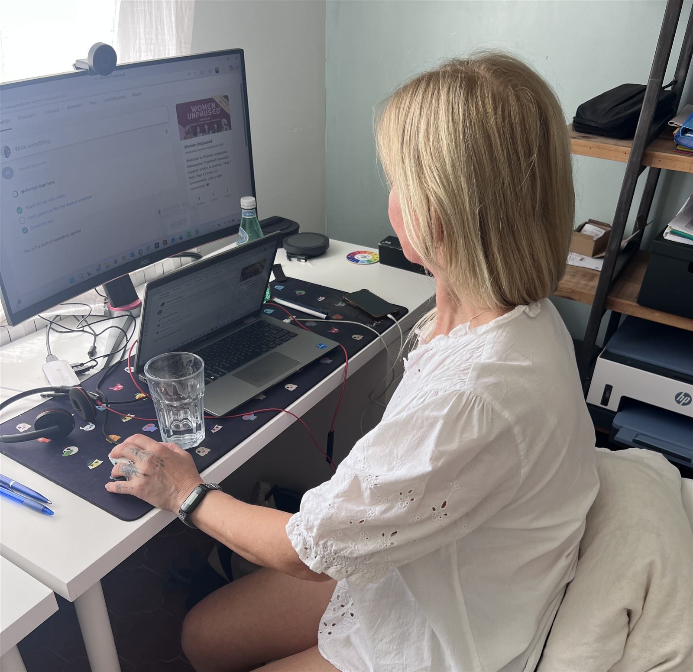

Research & Evidence
How we work — and why you can trust it
This page is our methodology, our sources and our independence policy, in full. No mystique, no marketing — just how the work is actually done.

Credibility isn't a claim, it's a method.
Where we look
We continuously monitor the major peer-reviewed databases and journals in menopause, ageing and women's health.
How we appraise
Every study is weighed up for design, sample size, bias risk and clinical relevance. We distinguish clearly between strong evidence, emerging signals and speculation — and we say so in plain words.
Weak evidence is never dressed up as certainty. When you're already exhausted and foggy, the last thing you need is overstated science.
Clinical grounding
Our appraisal doesn't happen in a vacuum. We read new findings alongside recognised clinical guidance, such as the NICE menopause guideline — and we're clear about where the evidence and the guidance agree, and where they don't yet.
There's clinical experience behind every report, too: our medical researcher, Nicky Draper, brings 18 years in medical research and 20 years of nursing in primary and acute care.
How we source
Every claim in every report links back to its original study. You never have to take our word for anything — the reference list is part of the product.
Our independence
Health Unpaused represents no company, brand or product. We accept no funding from pharmaceutical companies, supplement manufacturers or device makers.
Our revenue comes from subscribers — which means our only incentive is to be right.
Corrections
Science updates itself, and so do we. If new evidence changes a conclusion, or an error is found, we correct it visibly in the next report — not quietly.
What we are not
Our reports are educational information for informed decision-making. They are not medical advice, and never a substitute for consultation with a qualified healthcare professional.
Why the method matters
From evidence to actionables.
Appraising studies is only half the job. Every brief ends with concrete actionables — what you can actually do with what the evidence says.
Choose your briefingThe monthly process
From 100+ pages of studies to one ten-minute brief
Scan
Every month we monitor the major medical databases and journals for new menopause and women's health research.
Appraise
Each study is critically appraised for quality, sample size and clinical relevance — weak evidence is labelled as such.
Distill
We condense what matters into plain language, with full references so you can always go to the source.
Act
Every report ends with concrete actionables, tailored to you — whether you're a woman, a clinician or an organisation.
Evidence vs. myth
The method, applied
What the appraisal above looks like in practice: some of the most common menopause myths, held up against what the evidence actually says — from our medical researcher, Nicky Draper.


The output
What a finished brief looks like
Everything on this page ends here: one clear monthly report. Each finding is graded for how strong the evidence actually is, in plain language, with full references — and concrete actionables to close.
- Every finding graded: strong, moderate or emerging
- Plain-language "what this means for you"
- Concrete actionables and full references
Evidence you can act on, every month
Choose the briefing built for you — for women, doctors, HR or insurers.
Choose your briefing